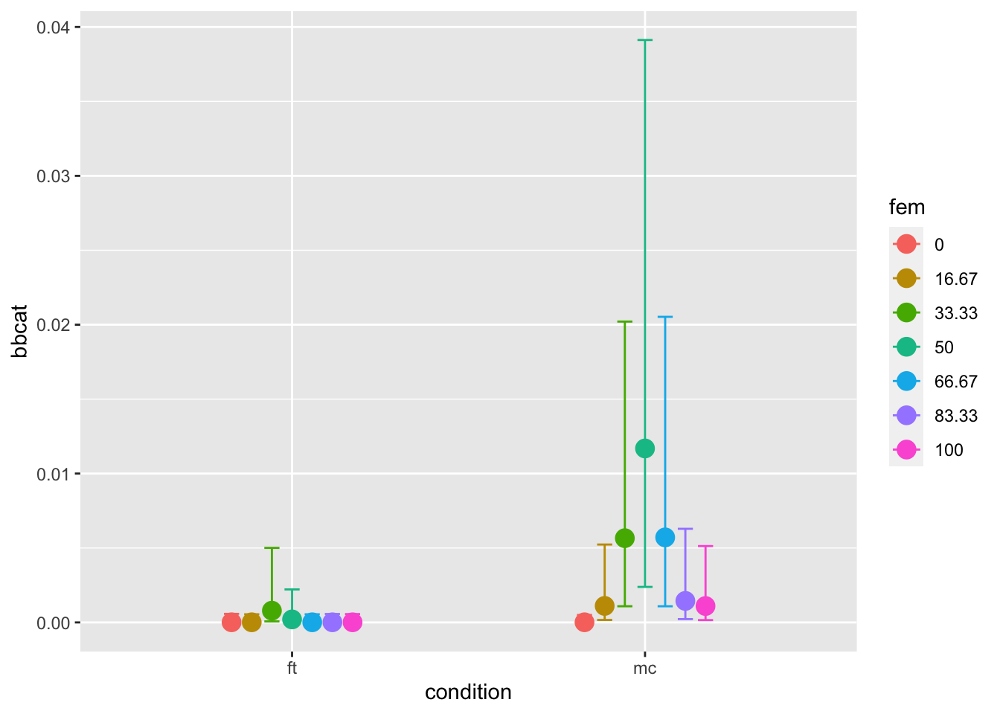
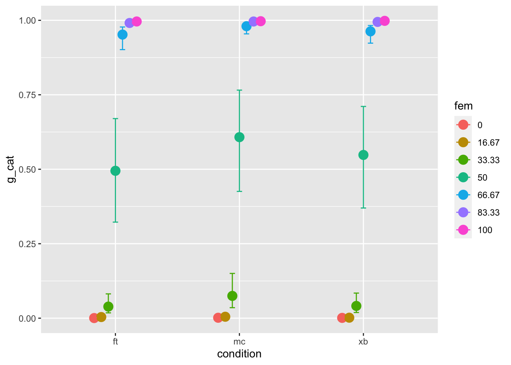

#Start by loading dependencies and the data
library(brms)
library(tidyr)
library(dplyr)
library(bayesplot)
library(tidybayes)
library(ggplot2)
source("src/functions.r")
d <- read_and_clean("data/cat2stduy1_data.csv") %>%
mutate(fem = 100-masc) Response Options - further tests
We produced morphed faces of different levels of femininity and masculinity. There were 18 continua, where gender varied in seven increments, for a total of 126 faces.
There were five response options conditions:
- binary categories - man/woman
- multiple categories - man/woman/other/don’t know
- Freetext - a free text box
- binary dimension - woman ——- man on a slider
- multiple dimensions - woman / man on separate sliders.
At the previous meeting, we decided that i would look at answering the question “do people use non-binary options when they have them?”
The way I’ve gone about doing that is by primarily comparing option the results from the multiple categories (option2) and freetext conditions (option 3).
Do people use the beyond-binary options?
The way I went about testing that is by comparing the amount of beyond-binary (i.e. “other” and “I don’t know” responses) across the free text and multiple categories conditions. Here’s snippet of the data for some context:
#Well, fist, first I wrangle data
tmp <- d %>%
filter(condition == "mc" | condition == "ft") %>%
mutate(categorization = recode(categorization,
"F" = "f", "kvinna" = "f", "female" = "f", "female " = "f", "Female"= "f", "Fenale"= "f", "women" = "f", "woman " = "f", "femLE" = "f", "FEmale" = "f", "Femalw" = "f", "Fwmalw" = "f", "Female " = "f", "woman" = "f", "Woman" = "f", "feMale" = "f", "fermale" = "f", "wman" = "f", "Femae" = "f",
"man" = "m","Male " = "m", "make" = "m", "Male"= "m", "male" = "m", "man " = "m", "male " = "m", "guy" = "m", "boy" = "m", "Make" = "m", "M" = "m", "Man" = "m", "Bottom half male; above nose female., Would have to say Male" = "m", " male" = "m", "male " = "m", "ale" = "m", "nmale" = "m", "MALE"= "m", "nale"= "m", " Male" = "m",
"Nonbinary" = "o", "Non Binary " = "o", "Unsure" = "o", "Non binary " = "o", "good" = "o", "Neutral" = "o", "neutral" = "o", "nonbinary" = "o", "bigender" = "o", "hen" = "o", "don't know" = "o", "Bottom half male, nose upwards female" = "o" )) %>%
mutate(bbcat = ifelse(categorization == "o"|categorization == "4", 1, 0),
fem = as.factor(fem))
tmp %>% select(categorization, condition, fem, bbcat) %>% head()# A tibble: 6 × 4
categorization condition fem bbcat
<chr> <chr> <fct> <dbl>
1 m ft 0 0
2 m ft 16.67 0
3 o ft 33.33 1
4 f ft 50 0
5 f ft 66.67 0
6 f ft 83.33 0So how do we actually test the question “do people use the non-binary option when they have them”? We can construct several models which gets increasingly more complicated and compare how well they predict the data.
In short, the idea is simple. We make three models:
- m0: a null model with no predictors
- m1: main effects model, with the predictors “morph level” and response option condition
- m2: interaction model, which is the the same as m1, with an additional interaction effect
Then we see which model best explains the data using leave-one-out cross validation. (if you want to go into the weeds on the models and what the models actually consist of, click the “complex model tabs”)
So we start with a null model, m0, which just has an intercept, and includes neither morph level or condition. For reference, it looks like this, but feel free to let your eyes glaze over it. (but in case your curious, the model includes random effects for subjects and faces, but nothing else)
\[ \begin{aligned} \text{beyond-binary}_{i} &\sim \mathrm{Binomial}(1,p) & (1) \\ \text{logit}(p_i)&= \alpha_{subject[i]} +\alpha_{face[i]}\\ \alpha_{face} & \sim \mathrm{Normal(0, \sigma_{subject})}\\ \alpha_{subject} &\sim \mathrm{Normal}(0, \sigma_{subject}) \\ \sigma_{face} &\sim \mathrm{HalfCauchy}(3) \\ \sigma_{subject} &\sim \mathrm{HalfCauchy}(3) \\ \end{aligned} \]
Then m1 adds fixed effect of condition and morph level. We can think about this as basically testing just the main effect of both condition (written out as \(\gamma_{cid}\)) and morph level (\(\beta_1Morph_{i}\)), but not the interaction (which we’ll get to later). \(cid\) is short for condition id, which means that this model calculates separate values for each condition, as opposed to a dummy variable, which would calculate the value (intercept) for one condition and then the difference of another condition. Here we just get values for each condition, and if we want to know the difference, we have to calculate it ourselves.
To add another level of complexity, we can make a second model m1 which includes the effects of both response option condition and morph level.
\[ \begin{aligned} \text{beyond-binary}_{i} &\sim \mathrm{Binomial}(1,p) & (2) \\ \text{logit}(p_i)&= \gamma_{cid[i]}+ \alpha_{subject[i]} + \beta_{[1]}Morph_{i}+ \alpha_{face[i]}\\ \gamma_{cid} &\sim \mathrm{Normal}(0,3)\\ \alpha_{subject} &\sim \mathrm{Normal}(0, \sigma_{subject}) \\ \beta_{1} & \sim \mathrm{Normal}(0,3)\\ \sigma_{face} &\sim \mathrm{HalfCauchy}(3) \\ \alpha_{subject} &\sim \mathrm{HalfCauchy}(3) \\ \sigma_{\gamma_{pronoun}}&\sim \mathrm{HalfCauchy}(3) \\ \textbf{R} &\sim \mathrm{LKJcorr}(2) \\ \end{aligned} \]
Lastly, m2 includes the full interaction effect. Note that all we’ve really done is changed \(\beta\) by also adding the \(cid\) subscript. What that means is that we’re calculating a unique effect of morph level for each condition. Again, the model doesn’t include an explicit interaction term (which, in standard notation, be the difference between the a reference condition and another condition), but we can calculate it later. And we will, don’t worry!
\[ \begin{aligned} \text{beyond-binary}_{i} &\sim \mathrm{Binomial}(1,p) & (3) \\ \text{logit}(p_i)&= \gamma_{cid[i]}+ \alpha_{subject[i]} + \beta_{cid[i]}Morph+ \alpha_{face[i]}\\ \gamma_{cid} &\sim \mathrm{Normal}(0,3),\: \text{for}\: cid =\text{ft, mc}\\ \alpha_{subject} &\sim \mathrm{Normal}(0, \sigma_{subject}) \\ \beta_{cid} & \sim \mathrm{Normal}(0,3),\: \text{for}\: cid =\text{ft, mc}\\ \sigma_{face} &\sim \mathrm{HalfCauchy}(3) \\ \sigma_{subject} &\sim \mathrm{HalfCauchy}(3) \\ \sigma_{\gamma_{pronoun}}&\sim \mathrm{HalfCauchy}(3) \\ \textbf{R} &\sim \mathrm{LKJcorr}(2) \\ \end{aligned} \]
m0 <- brm(bbcat ~ 1 + (1 |id) + (1|face:fem), family = bernoulli(link = 'logit'),
prior = c(prior(normal(-3,3), class = "Intercept"),
#prior(normal(0,3), class ="b", coef= "conditionmc:fem"),
#prior(normal(0,3), class = "b", coef = "conditionft")
#prior(normal(0,3), class ="b", coef= "conditionft:fem")
prior(cauchy(0,3), class = "sd")
),
data = tmp,
iter = 6000, warmup = 2000,
chains = 4,
cores = 4,
sample_prior = TRUE,
file = "models/m0"
)
m1 <- brm(bbcat ~ 0 + condition + fem + (1 |id) + (1|face:fem), family = bernoulli(link = 'logit'),
prior = c(prior(normal(0,3), class = "b", coef = "conditionmc"),
#prior(normal(0,3), class ="b", coef= "conditionmc:fem"),
prior(normal(0,3), class = "b", coef = "conditionft"),
#prior(normal(0,3), class ="b", coef= "conditionft:fem")
prior(cauchy(0,3), class = "sd")
),
data = tmp,
iter = 4000, warmup = 1000,
chains = 4,
cores = 4,
sample_prior = TRUE,
file = "models/fit_binary_stair_bb_fem"
)
m2 <- brm(f_cat ~ 0 + condition:fem + (1 |id) + (1|face:fem), family = bernoulli(link = 'logit'),
prior = c(prior(normal(-7,5), class = "b"),
prior(cauchy(0,3), class = "sd")),
data = tmp,
iter = 6000, warmup = 2000,
chains = 4,
cores = 4,
sample_prior = TRUE,
file = "models/fit_binary_stair_bb_fem_int_prior2"
)Main effecs
Having fit all of these models I then compare them to see which best predicts the data. We do this using a method call leave-one-out cross validation. This tells us which of our five models best predict the data on “new” or out of sample data points? If I can get the machine to work, this should show up in table 1
library(loo)
#loo1 <- loo(m0) %>% saveRDS("loo1.rds")
#loo2 <- loo(m1, mc_cores =4) %>% saveRDS("loo2.rds")
#loo3 <- loo(m2, mc_cores =4) %>% saveRDS("loo3.rds")
loo1 <- readRDS("loo1.rds")
loo2 <- readRDS("loo2.rds")
loo3 <- readRDS("Loo3.rds")
loo_table <- loo_compare(loo1, loo2, loo3)library(knitr)
library(kableExtra)
kable(
loo_table[,1:4] %>% round(2),
booktabs = "TRUE",
#format = "latex",
col.names = c("LOO difference", "St. Error diff", "LOO", "St. Error LOO"),
#row.names = c("Free text", "Multiple categories", "Binary categories"),
align = c("l", "c", "c", "c"),
caption = "Relative predictive power of models describing the outcome on the categorization task"
) %>%
kable_classic(full_width = F) %>%
footnote(
general_title = "Note.",
general = "LOO diff refers to the difference in loo between the model and the most predictive model. The first row describes the most predictive model, which is why the difference is 0",
threeparttable = TRUE,
footnote_as_chunk = TRUE
) | LOO difference | St. Error diff | LOO | St. Error LOO | |
|---|---|---|---|---|
| m2 | 0.00 | 0.00 | -234.17 | 23.23 |
| m1 | -2.46 | 2.71 | -236.63 | 23.07 |
| m0 | -18.83 | 6.02 | -253.00 | 24.51 |
| Note. LOO diff refers to the difference in loo between the model and the most predictive model. The first row describes the most predictive model, which is why the difference is 0 |
Table 1. suggests that the interaction models was the best at predicting data, suggesting that the interaction between condition and morph is an important determinant of the outcome. However, the comparatively large standard errors suggests that this effect is only inconclusively supported by the data.
Pairwise comparisons
I’m going to forge ahead anyway, and do what we might think of as contrast analyses, focusing on m3 only. Here we have several specific questions that we want answered. First, is it really the case that people generally make more beyond-binary categorizations in the mc condition? And secondly, is this effect concentrated at 50/50 morph level. First, let’s take a look at the data visualised.
conditional_effects(m2)
h0 <- hypothesis(m2,
"(conditionft:fem16.67 + conditionft:fem33.33 + conditionft:fem0 + conditionft:fem50 + conditionft:fem66.67 + conditionft:fem83.33)/6 =
(conditionmc:fem16.67 + conditionmc:fem33.33 + conditionmc:fem0 + conditionmc:fem50 + conditionmc:fem66.67 + conditionmc:fem83.33)/6 ")
h1 <- hypothesis(m2, "conditionft:fem50=conditionmc:fem50")
h2 <- hypothesis(m2, "(conditionft:fem0 + conditionft:fem100)/2 =(conditionmc:fem0 + conditionmc:fem100)/2") I’m going to give these hypothesis some arbitrary numbers.
First, if we just look at the number of beyond-binary categorizations.
Do particpants make beyond-binary categorizations in the multiple categories condition compared to the free text condition (h0)? It seems they do (Estimate = -3.93, CI =-6.76 - -1.28, BF10= 38.68).
If we focus on the 50/50 faces, do we still see an effect? It seems like we do (Estimate = -4.14, CI =-7.43 - -1.4, BF10= 16.66).
And if we focus on the faces at the end of the spectrum (i.e. 0 and 100 faces)? Here the evidence is only inconclusive (Estimate = -2.6, CI =-7.96 - 2.49, BF10= 0.84). What does this mean? Let’s discuss
How does this effect the relative distribution of m/f scores
Great, let’s move on to the step 2 that we talked about. So having answered the questions of “do people actually use the extra response options” with a resounding “probably, but not so much”, I’m going to move on to the second question: is it the case that the answers shift the distribution of m/f scores? What I mean is, are people replacing their ratings of “man” with ratings of “non-binary” for example. If that were to be the case, then we would expect the relative distribution of “man” scores to be somewhat lower in the multiple categories condition
Spoilers, it seems maybe not. Anyway, the first thing I did was make a version of the data where all the beyond-binary responses were taken out. Sort of the opposite of what I did last. I named the relevant variable f_cat because naming things is hard.
tmp <- d %>%
filter(condition == "mc"| condition == "xb"|condition == "ft" )%>%
mutate(categorization = recode(categorization,
"F" = "f", "kvinna" = "f", "female" = "f", "female " = "f", "Female"= "f", "Fenale"= "f", "women" = "f", "woman " = "f", "femLE" = "f", "FEmale" = "f", "Femalw" = "f", "Fwmalw" = "f", "Female " = "f", "woman" = "f", "Woman" = "f", "feMale" = "f", "fermale" = "f", "wman" = "f", "Femae" = "f",
"man" = "m","Male " = "m", "make" = "m", "Male"= "m", "male" = "m", "man " = "m", "male " = "m", "guy" = "m", "boy" = "m", "Make" = "m", "M" = "m", "Man" = "m", "Bottom half male; above nose female., Would have to say Male" = "m", " male" = "m", "male " = "m", "ale" = "m", "nmale" = "m", "MALE"= "m", "nale"= "m", " Male" = "m",
"Nonbinary" = "o", "Non Binary " = "o", "Unsure" = "o", "Non binary " = "o", "good" = "o", "Neutral" = "o", "neutral" = "o", "nonbinary" = "o", "bigender" = "o", "hen" = "o", "don't know" = "o", "Bottom half male, nose upwards female" = "o",
"1" = "f", "2" = "m")) %>%
mutate(f_cat = ifelse(categorization == "f"|categorization == "m", categorization, NA),
fem = as.factor(fem)) %>%
mutate(f_cat =as.numeric( f_cat == "f"))
head(tmp[,c("condition", "categorization", "f_cat")])# A tibble: 6 × 3
condition categorization f_cat
<chr> <chr> <dbl>
1 ft m 0
2 ft m 0
3 ft o NA
4 ft f 1
5 ft f 1
6 ft f 1I’m tired, your tired, so I’m going to move through this a little more quickly than the previous stuff. But basically, I went through the same steps as for the previous dataset, note that now I included the binary category condition this time.
Null <- brm(f_cat ~ 1 + (1 |id) + (1|face:fem), family = bernoulli(link = 'logit'),
prior = c(prior(normal(0,3), class = "Intercept"),
prior(exponential(2), class = "sd")
#prior(normal(0,3), class ="b", coef= "conditionmc:fem"),
#prior(normal(0,3), class = "b", coef = "conditionft")
#prior(normal(0,3), class ="b", coef= "conditionft:fem")
),
data = tmp,
iter = 6000, warmup = 2000,
chains = 4,
cores = 4,
sample_prior = TRUE,
file = "models/fit_mf_null"
)
condition_only <- brm(f_cat ~ 0 + condition + (1 |id) + (1|face), family = bernoulli(link = 'logit'),
prior = c(prior(normal(0,3), class = "b"),
prior(cauchy(0,1), class = "sd")),
data = tmp,
iter = 6000, warmup = 1000,
chains = 4,
cores = 4,
sample_prior = TRUE,
file = "models/condition_only"
)
main_effects <- brm(f_cat ~ 0 + condition + fem + (1 |id) + (1|face), family = bernoulli(link = 'logit'),
prior = c(prior(normal(0,3), class = "b"),
prior(cauchy(0,3), class = "sd")),
data = tmp,
iter = 4000, warmup = 1000,
chains = 4,
cores = 4,
sample_prior = TRUE,
file = "models/mainfx"
)
interaction <- brm(f_cat ~ 0 + condition:fem + (1 |id) + (1|face), family = bernoulli(link = 'logit'),
prior = c(prior(normal(0,3), class = "b"),
prior(cauchy(0,3), class = "sd")),
data = tmp,
iter = 6000, warmup = 2000,
chains = 4,
cores = 4,
sample_prior = TRUE,
file = "models/fit_mf_int"
)
morph_only <- brm(f_cat ~ 1 + fem + (1 |id) + (1|face:fem), family = bernoulli(link = 'logit'),
prior = c(prior(normal(0,3), class = "b"),
prior(normal(0,3), class = "Intercept"),
prior(cauchy(0,3), class = "sd")),
data = tmp,
iter = 6000, warmup = 2000,
chains = 4,
cores = 4,
sample_prior = TRUE,
file = "models/fit_g_fem"
)We’re going to do the same thing again, we’re going to start buy looking at whether the interaction model does better than the simple effects model, and then we’re going to look at the actual effects within the model. Buuut. It doesn’t seem lik it does much here. I’m going to show all that in table 2
library(knitr)
library(kableExtra)
kable(
loo_table2[,1:4] %>% round(2),
booktabs = "TRUE",
#format = "latex",
col.names = c("LOO difference", "St. Error diff", "LOO", "St. Error LOO"),
#row.names = c("Free text", "Multiple categories", "Binary categories"),
align = c("l", "c", "c", "c"),
caption = "Relative predictive power of models describing the outcome on the categorization task"
) %>%
kable_classic(full_width = F) %>%
footnote(
general_title = "Note.",
general = "LOO diff refers to the difference in loo between the model and the most predictive model. The first row describes the most predictive model, which is why the difference is 0",
threeparttable = TRUE,
footnote_as_chunk = TRUE
)| LOO difference | St. Error diff | LOO | St. Error LOO | |
|---|---|---|---|---|
| morph_only | 0.00 | 0.00 | -1343.72 | 43.10 |
| Null | -5.35 | 4.92 | -1349.07 | 44.12 |
| main_effects | -37.60 | 11.96 | -1381.31 | 44.77 |
| interaction | -42.10 | 12.09 | -1385.81 | 45.14 |
| condition_only | -4398.47 | 44.23 | -5742.19 | 11.18 |
| Note. LOO diff refers to the difference in loo between the model and the most predictive model. The first row describes the most predictive model, which is why the difference is 0 |
If we start by looking at which model is the best at predicting the data, it’s clear that only the morph only model really does a good job at predicting the outcomes. What does that mean? It means that morph level is the only variable that’s really useful for predicting the outcome. Adding condition
Just to give a sense of what the data actually look like, I’m also going to put up a figure for the interaction between condition and morph level.
conditional_effects(interaction)
In this figure, we can see that the probability of any person answering “woman” on any face depends mostly on that face’s femininity. We can see that for 50/50 faces, this probability is veery slightly higher in the mc condition, but the results from model comparison and the fact that the confidence intervals overlap so widely make me think that this difference is pretty small.